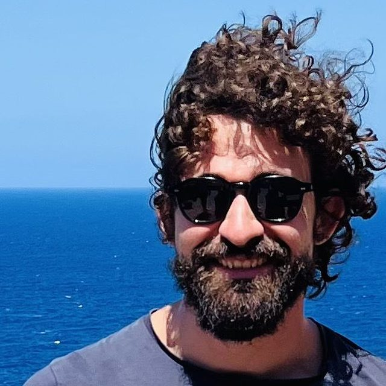

Olivier SULPIS
CNRS Researcher at CEREGE, France
CO₂ neutralizer
Bonjour !
I'm Olivier, a marine biogeochemist and ecologist, primarily interested in the carbon cycle of the ocean in the early Anthropocene. I use numerical models, laboratory experiments and in-situ observations to understand how sediments and organisms at the seafloor, a mostly unmapped environment that covers more than two thirds of our planet surface, regulate the climate of our planet. My research also explores deep-sea currents, waves and tides, marine snow, calcification and the response of calcifiers to global change. Leader of the Deep-C ERC project, I am developing novel experimental tools to reproduce abyssal and hadal environments in the laboratory, with a set of sensors operating under the highest pressures of the oceans.
I earned my PhD from McGill University, Montreal, in 2019, in aqueous chemistry. I pursued as a postdoctoral researcher at the University of Utrecht until 2023, when I started a CNRS research scientist position in the Climate team at CEREGE, south of France. In parallel with my research, I serve as an editor for Global Biogeochemical Cycles and Biogeosciences, and act as co-chair of a working group on the monitoring, reporting and verification of marine carbon dioxide removal, as part of the European Marine Board.
In my spare time, I enjoy playing bass, dancing, and cooking.
You can contact me directly at
Find more about my scientific work:
Meet the other team members